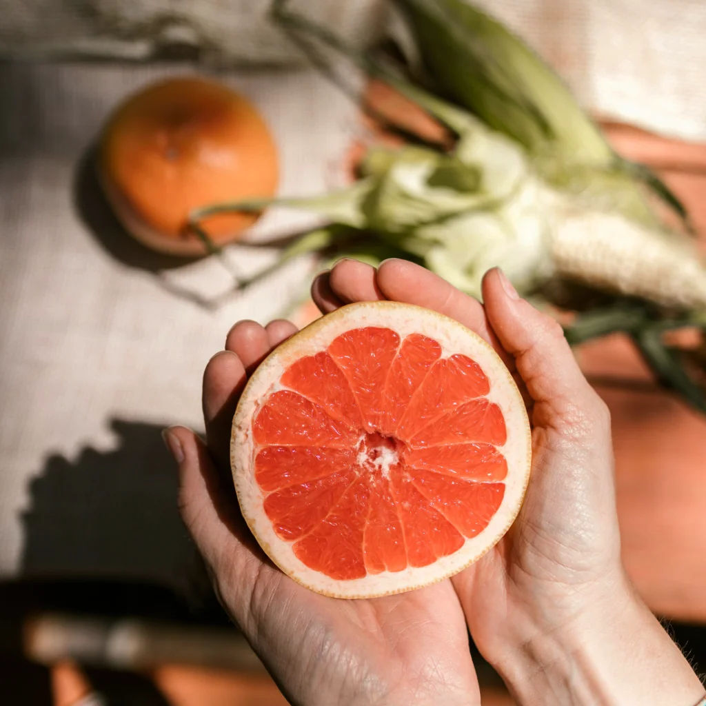
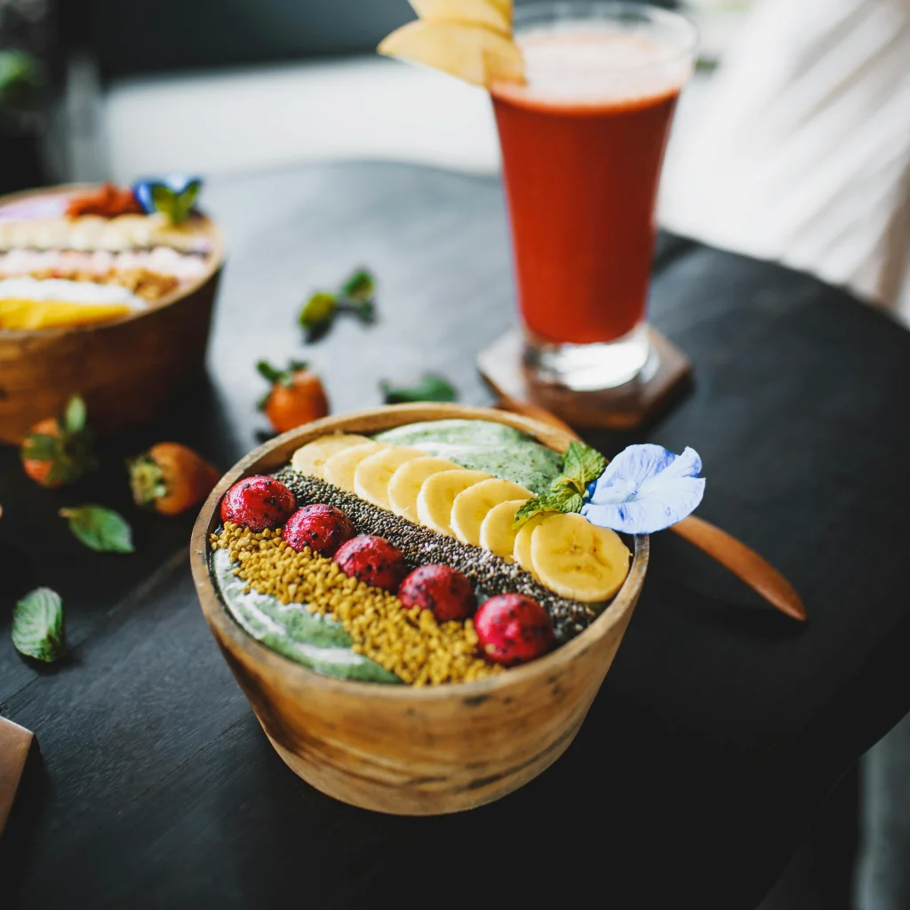

Strategi Belajar Efektif di Era Digital
Mendorong mutu pembelajaran melalui inovasi, kolaborasi dosen, dan pendekatan berbasis kebutuhan mahasiswa.
Wawasan terkini, artikel edukasi, dan informasi kegiatan inovasi seputar civitas akademika Kampus Pedia.


Implementasi kebebasan belajar yang mendorong inovasi, fleksibilitas akademik, dan kesiapan karier generasi mendatang.

Strategi jitu mendapatkan pendanaan studi dan memanfaatkan peluang beasiswa untuk jenjang karier akademik unggul.

Meningkatkan kecakapan bermedia sosial dan teknologi aman.
Baca Selengkapnya
Dorongan inovasi dan kebiasaan meneliti di perguruan tinggi.
Baca Selengkapnya
Menyeimbangkan prestasi akademik dengan moralitas ilmiah.
Baca Selengkapnya
Akses pembelajaran setara bagi seluruh mahasiswa.
Baca SelengkapnyaPengembangan soft skill dan sertifikasi profesi terapan.
Baca Selengkapnya
Metode pengajaran berbasis studi kasus dan interaksi aktif.
Baca SelengkapnyaKerja sama riset dan penyerapan tenaga kerja cepat.
Baca Selengkapnya
Layanan konseling mandiri dan kesehatan psikologis.
Baca SelengkapnyaPengalaman profesional riil sebelum kelulusan.
Baca Selengkapnya
Menyelesaikan masalah nyata dengan analisis kritis.
Baca SelengkapnyaPelatihan kepemimpinan dan manajerial organisasi.
Baca SelengkapnyaEksplorasi teknologi AI dan pembelajaran adaptif.
Baca Selengkapnya
Kemudahan akses ribuan e-book 24 jam sehari.
Baca Selengkapnya
Kunci membuka wawasan global dan berpikir kritis.
Baca Selengkapnya
Pertukaran pelajar dan riset lintas negara.
Baca SelengkapnyaMencetak SDM masa depan berdaya saing global melalui penguatan kurikulum berbasis karakter dan inovasi teknologi.

Pentingnya membangun mindset pembelajaran berkelanjutan untuk terus beradaptasi dengan perubahan zaman.


Peran pendidikan tinggi bermutu sebagai pendorong kemajuan karier, wawasan luas, dan kesejahteraan masyarakat.